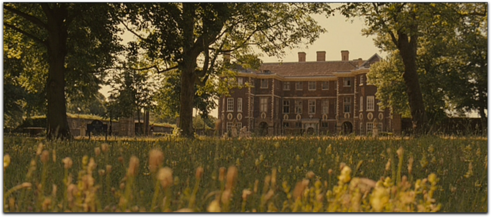

Blog
Prepping for a Dungeons & Dragons Session
- November 15th, 2022
I recently picked up Sly Flourish's Return of The Lazy Dungeon Master by Michael Shea. This book contains invaluable information for any DM that is pressed for time. As a busy college student and a dungeon master for a weekly group of dungeon delvers, alotting time for prepping is hard. I am always busy, so finding a 4 hour window to work through a session every week is a challenge. However, finding such a window is usually manageable. Trouble arises when I spend said 4 hours prepping random lore that will never come up instead of the core content of the session. Then I will come into the session with a barely scraped together dungeon, but a fully fleshed out town economy and political landscape.
Return of the Lazy Dungeon Master provides advice on how to run a game efficiently. The most relevent information is on how to prep. Shea outlines 6 core steps to quickly prepping a more fluid game.
Review the Characters: Shea describes a loose step where you review character background, desires, and abilities. You don't need to necessarily write anything down, but thinking about this kind of stuff is quintessential for a good session. Tailoring encounters around the abilities of players is a fantastic way to make players feel useful.
A Strong Start: You need to draw your players into the session. It's been a week since they have last played; remind them of the stakes of intrigue. But what if we ended the last session in a random boring place? Time skipping is okay. Skip ahead to a point of intrigue. Think of each session as a self-contained TV episode; the next episode doesn't always start immediately after the previous one.
Fantasic Locations: The game I run is a hexcrawl. Thus, prepping fantastic locations is the quintessential component of prep and takes the most time. I usually create a number of locations in the region, and write a sentence summary of each location. I only prep a location in true detail if I believe the party is heading in that direction soon. I have one primary piece of advice about running a hexcrawl or point crawl. Steal from modules and adventures. I never run full module adventures, but god, I love stealing dungeons or locations from them. There are thousands of adventure locations out there already written, you just have to find them. Use official WOTC adventures, DMsguild products, OSR adventures, old dungeon magazines, or old adventures. So much fantasy TRPG locations have been outlined. Just grab from multiple sources to create you hexcrawl region. If you are really pressed for time, you don't even need to edit these locations. Just reference them in your prep and change them as needed on the fly with your sick DMing improv skills.
Potential Scenes: Write down any scenes that you want to happen. These should mostly be independent of specific location. If a scene happens when you first enter a certain location, just write it down in that location. Otherwise, write it down in the scene section. If the scene happens at a certain location, but not when you first enter that location, it is valid to write it down in this section. For example, lets say Count Strahd you want Count Strahd to play with the PCs in some way. Write it down here and keep it vaguely location independent. This allows you to be fluid. You can run this scene when you think it would best fit in the adventure.
Secrets and Clues: I love writing this section. I divide it into 2 parts. First I construct a rumor table. This consists of both true and false rumors about nearby locations or important NPCS or anything. Next, I write down more general secrets and clues. Do any weird things happen that might clue off the player (birds acting strangely, shadows facing the wrong way, weird weather patterns, etc.)? If so, write that down here. Write down more lengthy secrets and clues here too. If you have a strange NPC, write down what he knows here. If there is a potential quest, write it down. Anything really that will clue you players in on your larger plot.
Important NPCs: Write down a bullet list of the important NPCs or your session. For the really important ones, you should write down name, location, description, alignment, race, stat block if needed, specifics on how to do their voice, short-term goals, and long-term goals. For less important NPCs, just write down their name, description, and potentially voice.
Relevent Monsters: This is the one section of Sly Flourish's prep guide I can ignore. This is because of previous prep. Monsters can be encountered in 2 ways during my sessions: random encounters and tied-to-a-location/scene. If a monster is tied to a location or scene, I write it down with the location or scene. Otherwise, I have written random encounter tables for every biome. I will roll on those.
Rewards: Sometimes your players look in a cool, creative place for treasure. Naturally, to reward their curiousity, you want to give them treasure. So it is useful, for a more fluid game, to write down the treasure you want to give them. I don't only include magic items on this list; mundane loot is also a very useful reward.
Loose Outline: Write down a numbered list of the likely order of scenes, locations and hints.
Growing Up in a Dystopia: An Analysis of Dystopian Fiction and Never Let Me Go
Dystopian novels have dominated Western media throughout the late twentieth and twenty-first centuries. The youth’s disillusion with the state of the world and their future has created a modern zeitgeist of pessimism that is reflected in Western culture. From The Hunger Games to Blade Runner to The Handmaid’s Tale, media attention has almost entirely been focused on fictional dystopias. But what is a dystopia? In her article, “A Golden Age for Dystopian Fiction,” journalist and historian Jill Lepore defines a dystopia as “a paradise lost” (4). While this applies to some dystopias, the far more terrifying dystopias are those that are only a dystopia to an outside on-looker. If a dystopia is all a person has ever known and he lacks other societies to compare it to, is it still a dystopia for him? In the 2005 novel, Never Let Me Go, author Kazuo Ishiguro explores the impact of information on youth development. He most intimately investigates this relationship through Kathy’s style of narration. Never Let Me Go is narrated retrospectively in first-person as Kathy describes her childhood, teenage, and young adult years shortly before she is scheduled for organ harvesting. In this, Ishiguro does not arbitrarily explain the core concepts of his strange world, much is left unsaid. The reader must piece together the strange rules of this 1990s Britain through hints in Kathy’s stream of consciousness thoughts. Through these reticent narrative methods, Ishiguro explores the interplay between information and power. Someone born in a dystopian world will often not consider their predestined doom an unfortunate fate; to them, it is merely life.
By throwing the readers directly into the events of the novel and only gradually revealing the structures of his imagined world, leaving much to the reader’s imagination, Ishiguro encapsulates the ways in which the organ harvesting of students is completely normalized in the eyes of the students. A middle-aged Kathy does not think twice about the strangeness of this system because she was raised in this world. This mental state is displayed when the novel begins:
My name is Kathy H. I’m thirty-one years old, and I’ve been a carer now for over eleven years. That sounds long enough, I know, but actually they want me to go on for another eight months, until the end of this year. That’ll make it almost exactly twelve years. [...] My donors have always tended to do much better than expected. Their recovery times have been impressive, and hardly any of them have been classified as “agitated,” even before fourth donation. (3)
The reader has no idea what a carer or a donation is, he simply must adapt and attempt to follow Kathy's narration. By the next paragraph, Kathy dives right into describing Hailsham and memories from her childhood. There is no lore dump monologue. There is no explanation provided. The reader must simply keep reading and attempt to make sense of the world. This is a trend throughout the entire novel: information is not readily available—it is gradually spoon fed to the reader through random memories that are described. This method of introducing the reader to the concept of donations establishes Kathy’s attitude toward them. Donations are not strange, they are simply an aspect of life. To her, donations do not make her world a dystopia, they are simply the end of life, the same way real humans accept that they will eventually die. Death is arguably more normalized in Kathy’s world than in the real one. Religion is never mentioned in the novel, which implies that the characters are more accepting of an eventual demise than those who believe in an afterlife. Ishiguro does not even fully establish what a donation is until chapter seven. His gradual drip-feed of information reinforces the idea of a normalized dystopia.
In their older years, faced with their imminent demise, the students attempt to delay their donations, but they are not afraid of them. Ishiguro employs a limited emotional range of his characters to illustrate how their environment has nurtured them into accepting young death as commonplace. One could argue that Tommy, Ruth, and Kathy do not accept their deaths. Afterall, they put in effort to search for the deferral, building art portfolios, finding Madame, and petitioning her and Mrs. Lucy. And while at the boat, Ruth displays a relatively negative reaction to the discussion of donations: “‘Why would he know?’ Ruth said. ‘How could he possibly know what Chrissie would have felt? What she would have wanted? It wasn’t him on that table, trying to cling onto life. How would he know?’ The flash of anger was more like old Ruth” (206). After failing to receive their deferral, Tommy has a similar angry reaction reminiscent of his fits as a boy: “Tommy’s figure, raging, shouting, flinging his fists and kicking out.” (250-251). However, the above argument is flawed. Sure, Ruth and Tommy both show anger, but they never display sadness or fear. They are angry about their lot in life, but they are not afraid, a sign of an acceptance of their mortality. Tommy’s rage is merely a reaction to not receiving a deferral. He wanted a few more years with Kath, not to avoid death. The characters never mention trying to escape or avoid death altogether; their ultimate goal is simply to defer their donations for three years. Kathy’s emotional reaction to news of her first donation explicitly establishes this acceptance. The novel begins with her announcing that her first donation is in eight months, but Ishiguro does not establish any associated emotion. The novel ends with Kathy driving, casually mentioning, “by the end of the year, I won’t be driving around like this any more” (261). Kathy is completely dispassionate because Kathy has been raised to accept her fate.
In the final chapters of the novel, Ishiguro finally explores the political landscape around organ harvesting. He does this by establishing the beliefs of the relative radicals in his world. In his world, those on the extreme ends of the spectrum believe in the humane upbringing of students. There is no political movement promoting the ending of organ harvesting; the dystopia is so normalized that the relatively radical members of the society still believe in the validity of the dystopia. In the penultimate chapter, Miss Emily offers criticisms of a radical staff-member that Hailsham had to let go:
Finally she said: ‘She was a nice enough girl, Lucy Wainright. But after she’d been with us for a while, she began to have these ideas. She thought you students had to be made more aware. More aware of what lay ahead of you, who you were, what you were for. She believed you should be given as full a picture as possible. That to do anything less would be somehow to cheat you. We considered her view and concluded she was mistaken.’ (245)
Miss Lucy is the most radically opinionated figure that the book introduces on the topic of organ harvesting and she merely believes that the students should be informed of their misfortunate future early on. She does not criticize the practice, only the methods of carrying it out. By illustrating that the radicals on organ harvesting still believe that it should be carried out, Ishiguro displays how normalized it is. Everybody in his world does not question the dystopia.
So, how does Ishiguro’s vision of characters naive to their dystopia compare to the more common trope of characters cognizant of their dystopia? In “A Golden Age for Dystopian Fiction,” Jill Lepore explores twentieth and twenty-first century dystopias. The dystopian literary works she introduces fall into three broad categories in terms of the interplay between protagonist cognizance and lack of awareness of their dystopia. The most common trope is for a character to begin the story content with their dystopia, only for them to become disillusioned with their lot in life and start fighting back as the story progresses. Aldous Huxley’s Brave New World, George Orwell’s 1984, Kurt Vonnegut’s Player Piano, Ray Bradbury’s Fahrenheit 451, and Ayn Rand’s Anthem are all examples of this development. In several other works of fiction, the characters begin discontent with their world: Margaret Atwood’s The Handmaid’s Tale, Suzanne Collins’ The Hunger Games, and Ernest Cline’s Ready Player One, for example. The least common dystopia is one where the protagonist never fights against the system. The dystopia’s ironfisted control over information prevents the protagonist from ever realizing that they live in a dystopia. Only as a reader, looking from the outside in, is the dystopia revealed. Ishiguro’s dystopia proves to be one such tale. Because his story examines a child growing up in a dystopian society, Ishiguro gives the reader fascinating insight on these societies. If the characters are not unhappy with their lot in life, is it still a dystopia? The society may seem dystopia to outside readers, but from the perspective of someone living within it, it is not. If one shifts perspectives to any one of the background characters in tales of discontent, often the dystopia becomes a utopia. The background characters in 1984 drugged up on the happiness drug, soma, are living in a utopia; only a select few protagonists are not. Discontent is the difference between a utopia and a dystopia and often the same society can act as both to different characters.
The discussion of what is and what is not a dystopia leads to an interesting question: is the broad happiness of a population the only difference between a utopia and a dystopia or are there other important factors? A society where people are content, but lack freedom, could be considered a utopia or a dystopia. Is a society where half the people are happy a utopia for half of the population, or is it a dystopia because there is an oppressed class? What about a completely content society that survives by exploiting natural resources, is that dystopia, or does the treatment of non-sapient life also factor in? There are many such questions that one must ask in the discussion of utopian and dystopian societies, and the answers are all extremely debatable.